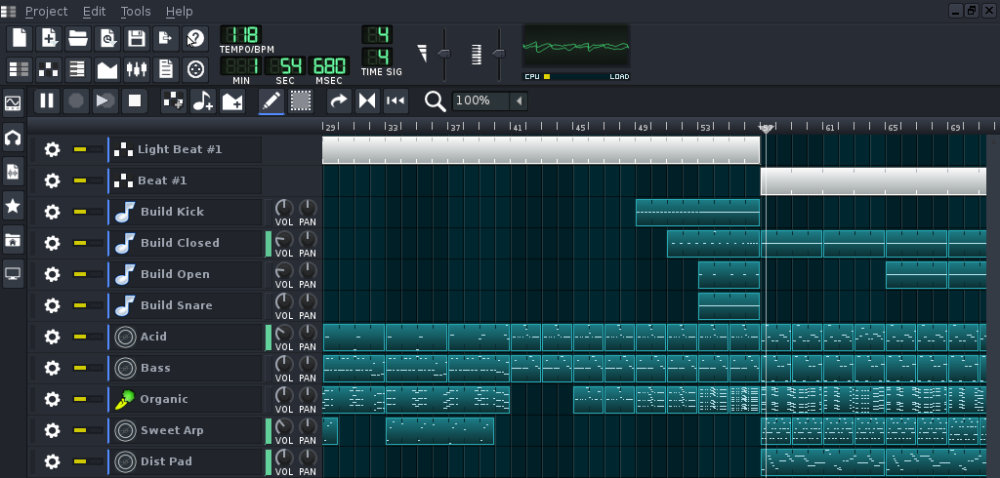

معمولا وقتی کسی از جاهای ناجور به جمع آزادکارها میپیونده دنبال یکسری معادل برای برنامههایی که قبلا با اونها دمخور بوده میگرده؛ خب خیلی از آهنگسازان امروزی از برنامههای آهنگسازی با کامپیوتر مثل ®FL Studio برای ساخت ملودیهاشون استفاده میکنن. ممکنه استفاده از معادل یک برنامه در ابتدا سخت به نظر بیاد، اما استثناهایی هم وجود دارن که از بقیه بهتر کار میکنن!

Linux Multimedia Studio یکی از باحالترین DAWها برای ساخت آهنگهای سبک الکترونیکه که از VST، MIDI، Soundfont و خیلی چیزهای دیگه پشتیبانی میکنه و پلتفرمی هم برای به اشتراکگذاری محتواش داره.
چند روش برای نصب این برنامه وجود داره:
- نصب از مخزن رسمی
- نصب از مخزن غیر رسمی
- دانلود از سایت خود برنامه
- کامپایل و ازین حرفا
دوتای اول راحتتر از بقیه هستن.
۱. نصب LMMS
از مخزن رسمی
فعلاً نسخهی ۱.۰.۰ بدون پشتیبانی از VST توی مخزن رسمیه:
user@ubuntu:~$ sudo apt-get install lmms
از مخزن غیر رسمی
نسخهی ۱.۱.۰ هم با پشتیبانی از VST به همراه WINE توی مخزن irie هست:
user@ubuntu:~$ sudo add-apt-repository ppa:irie/lmms user@ubuntu:~$ sudo apt-get update user@ubuntu:~$ sudo apt-get install lmms
۲. افزودن بانک صدا
خود برنامه سمپلهای خوبی داره ولی برای من کافی نبود. با توجه به اینکه fluidsynth یکی از بهترین سینثیسایزرهای متنبازه، ما از sf2ی اون استفاده میکنیم. حجم زیادی داره ولی صدای پیانو، گیتار(الکتریک، پلاستیک، بیس و ...)، ویولن، درامست و ... رو بهخوبی تولید میکنه.
user@ubuntu:~$ sudo apt-get install fluid-soundfont-gm user@ubuntu:~$ cp /usr/share/sounds/sf2/FluidR3_GM.sf2 ~/Soundbank.sf2
حالا یک فایل به اسم Soundbank.sf2 توی پوشهی خانگی شما هست.
۳. نمونه
چون پلتفرم برنامه فقط اجازهی اشتراکگذاری فایل پروژهی برنامه رو میده، همهی فایلهای موجود بدون هرگونه بانک صدا یا پلاگین خارجی آپلود میشن. سری به نمونهی کارهای من هم بزنین.
شما هم کارهای خودتون رو برای بقیه بذارین!